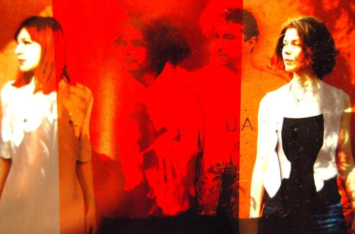

zugesandte Information (Medien-Info der Caritas MIL)
Lesung und Konzert im Jugendzentrum Miltenberg
Caritas-Mitarbeiten Corinna Fuchs: Immer mal Neues wagen
Eine Lesung mit anschließendem Konzert – diese interessante Variante gab es im Miltenberger Jugendzentrum, das durch den Caritasverband im Auftrag der Stadt geleitet wird, bisher noch nicht. „Yohazid feat. Mapec“ heißt es nun, wenn dieses Unterfangen erstmals in Angriff genommen wird. Caritas-Mitarbeiterin Corinna Fuchs, zuständig für den Betrieb des Jugendzentrums, versucht auch hier, neue Wege zu gehen, um ein abwechslungsreiches Programm gestalten zu können. (mehr…)
Mit einem eigenen musikalischen und literarischen Abend erinnern der Freundeskreis Café fArbe e.V. und der Caritas-Treffpunkt Café fArbe an den Beginn des Ersten Weltkrieges vor 100 Jahren. Gleichzeitig wenden sich Auftretende und Veranstalter damit gegen Militarismus und Kriegstreiberei. (mehr…)
Konzert mit Anthrazit, Mapec, Yohazid und „U.A.“ zum Auftakt der Vernissage

Mit einem Konzert im Café fArbe wird die vorerst letzte Ausstellung, die im Obergeschoss des Miltenberger Franziskushauses stattfindet, am 19. September eröffnet. Die Fotografin Ida Lumpinzki, die auch unter dem Künstlernamen „Herzschwester“ auftritt, zeigt dabei facettenreiche Fotografien. (mehr…)
Ein anarchistischer Abend mit leicht unzüchtigem Charakter.
Ungehorsam und unbeugsames Aufbegehren gegen die Obrigkeit zogen sich wie einer roter Faden durch das Leben des Schriftstellers und Anarchisten Erich Mühsam.
Inspiriert von revolutionären Ideen widmete sich Mühsam, sein Leben lang, in Wort und Schrift, der Ablehnung jedweder Autorität, der Solidarität mit den von Unterdrückung und Ausbeutung Betroffenen und der Überwindung kleinbürgerlicher Verhältnisse.
Doch auch die Liebe zur Freiheit und die Lust an Rausch und Leben kamen in seinen Werken nicht zu kurz. Mühsam wurde am 10.07.1934 von SS-Schergen im Konzentrationslager Oranienburg ermordet. Seine Unbeugsamkeit wurde zu einem Symbol des antifaschistischen Widerstands.
Seine Texte und Gedichte finden bis heute Verbreitung und wurden in unterschiedlichsten Stilen vertont. Einen Teil seiner Werke wollen wir an diesem Abend unseren Gästen zugänglich machen.
Für Unterhaltung und Rausch sorgen Erich Mühsam Vertonungen in akustischen Gewand und süffige Rotweine eines Winzerkollektivs aus Norditalien.
Samstag, 29. März
20:00 Uhr
„Stern“, Platanenallee 1, Aschaffenburg
Am Wochenende in der Zeitschriftenhandlung am Hauptbahnhof Aschaffenburg: Zufällig fällt der Blick auf eine Heftroman-Reihe, die mir so seltsam bekannt vorkommt. „Das kann nicht sein“, denke ich mir, „die Landser-Hefte sind doch vom Markt genommen“. Das ist richtig – und auch falsch. Denn als Heftreihe „Weltkrieg“ sind sie wieder da, in gleicher Aufmachung und – was noch schlimmer ist – gleichem Inhalt. Herausgegeben durch einen Verlag in der Schweiz, jenem zentraleuropäischen Schandfleck, der sich nun zwar nicht gegen die guten Euros aus Resteuropa abschotten will, aber gegen die Menschen, die von dort kommen.
Kaum wird in Deutschland mal was Vernünftiges gemacht – die Einstellung des „Landsers“ – schon machen Heidi und ihre Freunde einen dicken Unfug.
„Wer hat´s erfunden?“ – Ach, sollen uns die Röstifresser doch am Arsch lecken!
Am Donnerstag, den 26. Juli ab 19 Uhr heisst es wieder: Bühne frei. Ob Musiker, Comedian, Akrobaten, Solokünstler, Dichter oder Kleinkünstler, Selbstdarsteller – alle sind herzlich willkommen. Das Motto: „Frei, live und direkt!“ Organisiert und moderiert von Peter Kraft. „Die Londoner haben doch auch ihren Speaker’s Corner!“
Interessierte Künstler melden sich bitte bei L/U/C/K/Y A‘R'T: 0152/05757159.
Da waren sie mal alle zusammen beim GEGENTAKT, die Lieblingsmusiker der Redaktion kommunal.tk: KBF Revolte (unplugged mit MC MörderBeat und Jana; MC HeiZkesseL im Publikum, siehe auf dem Foto vorne links), Yohazid (mit Mapec) und Reinhard Frankl. Zum Abend steht bei Mapec etwas. Wir bringen hier drei Fotos:
Gegentakt – künstlerische Beiträge zu den Wochen gegen Rassismus – am 30. März, 20 Uhr – Lieder, Texte und Jam Session im Caritas-Treffpunkt Café fArbe; mehr Infos gibt es hier.
Eine Besucherin hielt es schlicht für „die beste Veranstaltung dieser Art, die ich je besucht habe“. Gemeint ist der Miltenberger Gedenkabend am 9. November, der an die Pogrome von 1938 erinnerte und zu der Menschen aus dem ganzen Landkreis sowie aus Aschaffenburg gekommen waren. Neben Liedern, Texten und einem kurzen Vortrag wurden erstmals die Namen jener jüdischen Mitbürgerinnen und Mitbürger aus Miltenberg verlesen, die im Naziterror ermordet wurden.
Hinweisen müssen wir dringend auf die beiden noch ausstehenden Termine am Blauen Klavier (s.o.) vor der City Galerie in Aschaffenburg: jeweils donnerstags, 28. Juli und 25. August, 19 Uhr. Es gibt Lyrik, Prosa, Songs, Kleinkunst … In einem früheren Beitrag haben wir uns schon mit diesem Phänomen beschäftigt. Zum Nachlesen allemal empfehlenswert.